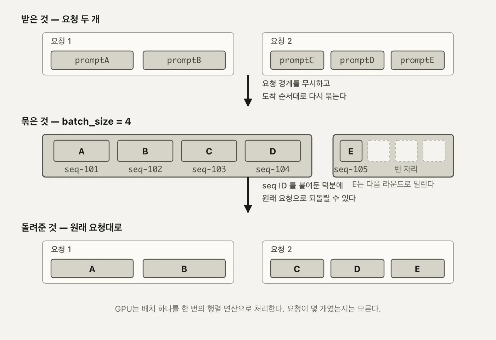
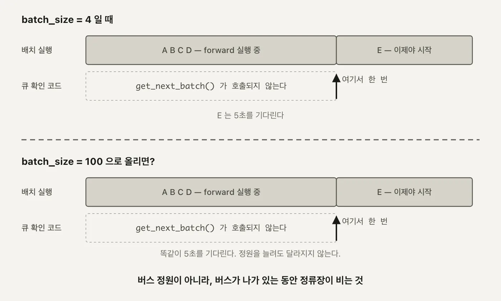
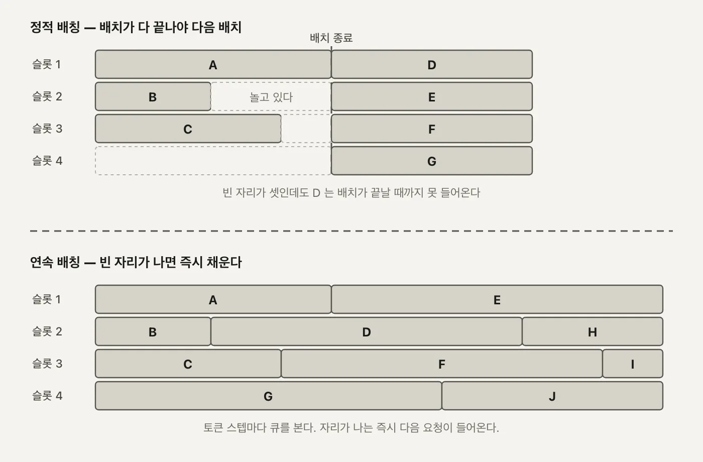

llm
서빙 2편. 정적 배칭 - 처리량이 64배 벌어지는 지점
요청 경계를 무시하고 프롬프트를 다시 묶는 배칭의 원리와, 동시 요청을 1개에서 64개까지 올리며 직접 잰 처리량
2026.08.16 · 32 min read
1편에서 요청 하나가 들어와서 나가기까지 거치는 부품들을 봤습니다. 그 구조가 다 갖춰져 있어도 GPU 앞에 요청이 여러 개 쌓이면 처리량 문제가 그대로 남습니다. 프롬프트를 한 번에 하나씩만 넣으면 GPU 코어 대부분이 유휴 상태로 남고, 다음 요청은 그 앞의 요청이 끝날 때까지 순서대로 기다립니다.
배칭(batching)은 이 문제를 여러 프롬프트를 묶어서 한 번의 forward pass로 같이 계산하는 방법으로 풉니다. 그런데 묶는 기준이 "요청"이 아닙니다.
1부. 배치가 처리량을 올리는 원리
1.1 요청 경계를 무시하고 다시 묶는다
API 요청 하나에 프롬프트가 여러 개 담길 수 있습니다. /generate 엔드포인트가 받는 BatchGenerateRequest부터가 prompts: List[str]입니다. 그런데 서버 안에서 실제로 GPU에 올라가는 배치는 이 요청 단위와 다릅니다.
두 요청이 동시에 들어온 상황을 보겠습니다.
요청1 prompt A, prompt B (seq-101, seq-102)
요청2 prompt C, prompt D, prompt E (seq-103, seq-104, seq-105)
↓ 서버가 다시 묶는다
Batch1 A, B, C, D ← 요청1의 절반 + 요청2의 절반
Batch2 E ← 요청2에서 남은 한 개
요청1의 프롬프트 두 개가 나뉘지 않고, 요청2의 프롬프트 세 개 중 두 개(C, D)만 요청1의 나머지와 섞여 Batch1에 들어갑니다. 남은 E 하나가 Batch2로 넘어갑니다. 묶는 기준이 "어느 요청에서 왔는가"가 아니라 "지금 이 순간 GPU가 한 번에 감당할 수 있는 개수" 이기 때문입니다.
- 요청 안에서도 갈라진다 - 같은 요청의 프롬프트라도 배치 경계에 걸리면 서로 다른 라운드에서 처리됩니다.
- 요청끼리도 합쳐진다 - 다른 요청에서 온 프롬프트라도 같은 라운드에 들어가면 하나의 텐서로 묶여 계산됩니다.
이렇게까지 해서 다시 묶는 이유는 GPU가 일하는 방식 때문입니다. 행렬곱 하나를 프롬프트 1개짜리로 돌리든 4개짜리로 돌리든, GPU 입장에서는 코어를 채우는 정도만 다를 뿐 걸리는 시간이 크게 늘지 않습니다. 프롬프트를 하나씩 순서대로 처리하면 이 여유를 그냥 버리는 셈입니다. 3부에서 실제로 잰 숫자를 보면, 프롬프트 1개짜리 라운드와 4개짜리 라운드의 처리 시간이 0.318초와 0.340초로 거의 같습니다. 넷을 한꺼번에 계산하는 비용이 하나를 계산하는 비용에 거의 얹혀 나온다는 뜻이고, 이게 배칭으로 처리량을 올릴 수 있는 근거입니다.
프롬프트 1개 [ A ] → GPU 커널 1회 실행, 코어 대부분 유휴
프롬프트 4개 [ A B C D ] → GPU 커널 1회 실행, 같은 코어를 4배 채워서 사용
커널을 실행하는 오버헤드, 가중치를 GPU 메모리에서 읽어오는 시간은 배치 크기와 거의 무관합니다. 늘어나는 건 그 위에서 도는 곱셈·덧셈 횟수뿐이고, GPU는 원래 이걸 병렬로 처리하도록 만들어진 장치입니다. 그래서 프롬프트 1개를 4번 순서대로 처리하는 것보다, 4개를 한 번에 처리하는 쪽이 시간당 더 많은 요청을 처리합니다. 요청을 순서대로 하나씩 처리하는 방식과 묶어서 처리하는 방식의 차이가 결국 이 여유를 쓰느냐 버리느냐의 차이입니다.
왜 중요한가 - 요청 경계가 사라진다는 건 "결과를 어느 요청으로 돌려줘야 하는지"를 서버가 별도로 기억해야 한다는 뜻입니다. 그 기억 장치가 다음 절의 Sequence입니다.
1.2 Sequence - 흩어진 프롬프트를 되찾는 표
프롬프트가 배치 사이로 흩어지고 나면, 결과가 돌아왔을 때 "이 텍스트가 원래 어느 요청, 어느 프롬프트의 것이었나"를 알아야 합니다. 이 역할을 하는 게 Sequence입니다.
class Sequence:
def __init__(self, seq_id: str, prompt: str, client_stream, loop):
self.id = seq_id
self.prompt = prompt
self.output = []
self.finished = False
self.loop = loop
self.client_stream = client_stream
self.token_count = 0
(workload_manager.py:6-14)
id- 이게 앞 절의seq-101같은 고유 키입니다. 배치가 어떻게 재조합되든 이 값 하나로 원래 요청을 되찾습니다.prompt- 초기 입력 텍스트. 스트리밍 경로에서는 생성된 토큰이 여기 계속 이어붙습니다.output- 지금까지 생성된 텍스트 조각들의 리스트.finished- 이 시퀀스의 생성이 끝났는지.token_count- 지금까지 생성한 토큰 수. 스트리밍 경로에서seq.token_count > self.max_tokens(llm.py:48)를 넘기면 아직 EOS가 안 나와도 강제로 스트림을 끊는 안전장치로 씁니다.client_stream,loop- 스트리밍 요청일 때 토큰을 돌려줄 큐와 이벤트 루프. 배치 요청이면 둘 다None입니다.
이 필드들이 실제로 채워지는 지점도 한 곳에 모여 있습니다.
def update_sequence_output(self, seq_id: str, token: str, is_finished: bool = False):
if seq_id in self.sequence_map:
sequence = self.sequence_map[seq_id]
sequence.output.append(token)
sequence.prompt += token
sequence.token_count += 1
sequence.finished = is_finished
return sequence
return None
(workload_manager.py:82-89)
sequence.prompt += token이 눈에 띕니다. 프롬프트 필드가 입력만 담아두는 게 아니라 생성된 텍스트까지 이어붙이는 누적 버퍼로도 쓰입니다. 스트리밍 경로에서 다음 토큰을 예측하려면 지금까지 만든 텍스트 전체가 다시 입력으로 들어가야 하는데, 그 입력을 매번 새로 조립하지 않고 Sequence 하나가 계속 들고 있는 겁니다.

seq-101~seq-105 ID만 있으면 결과가 정확히 원래 요청으로 돌아갑니다. (자작 도식)1.3 배칭 여섯 단계
프롬프트가 들어와서 결과로 나가기까지 실제로 거치는 단계는 여섯 개입니다.
| 단계 | 하는 일 | 담당 |
|---|---|---|
| 1. Request intake | 사용자가 /generate를 호출한다 |
main.py의 FastAPI 라우트 |
| 2. Prompt queuing | 프롬프트마다 Sequence를 만들어 FIFO 큐에 넣는다 |
add_request |
| 3. Prompt tracking and batching | 큐에서 최대 batch_size개를 꺼내 활성 목록에 담는다 |
get_next_batch |
| 4. Batch execution | 활성 목록을 워커 프로세스로 보낸다 | execute_batch |
| 5. Model inference | 배치를 하나의 텐서로 토큰화해 model.generate()를 한 번 돌린다 |
ModelWorker.generate |
| 6. Response mapping | 결과를 request_id로 다시 묶어 워크로드 매니저와 Sequence에 반영한다 |
update_sequence_output |
12단계는 요청이 들어오는 쪽, 5단계가 실제 GPU 계산이고, 3단계와 6단계가 요청 경계와 배치 경계를 잇는 접착제입니다. 4단계에서 35단계를 감싸는 프로세스 경계를 한 번 왕복하는 비용이 붙는데, 이 비용이 3부에서 잰 N=1 격차의 원인 중 하나입니다.
왜 중요한가 - 여섯 단계 중 GPU가 실제로 일하는 건 5단계뿐입니다. 나머지 다섯 단계는 전부 "그 5단계를 얼마나 자주, 얼마나 크게 도느냐"를 결정하는 관리 계층입니다. 2부에서 볼 WorkloadManager가 3, 6단계를, ModelExecutor가 4단계를 맡습니다.
2부. WorkloadManager - batch_size = 4
2.1 FIFO 큐와 고정 배치
이 프로젝트의 배칭 구현은 WorkloadManager 하나에 들어 있습니다.
class WorkloadManager:
def __init__(self):
self.incoming_queue: Queue[Sequence] = Queue()
self.active_sequences: List[Sequence] = []
self.incoming_streaming_queue: Queue[Sequence] = Queue()
self.active_streaming_sequences: List[Sequence] = []
self.batch_size = 4 # Process up to 4 sequences at a time
self.sequence_map: Dict[str, Sequence] = {}
# for basic generate and batch generate
def add_request(self, prompt: str) -> str:
request_id = str(uuid.uuid4())
sequence = Sequence(request_id, prompt, None, None)
self.incoming_queue.put(sequence)
self.sequence_map[request_id] = sequence
return request_id
(workload_manager.py:16-32)
batch_size = 4가 이 글에서 다루는 배칭의 정원입니다. add_request()는 프롬프트마다 Sequence를 만들어 큐에 넣고, sequence_map에도 같이 등록합니다. 큐잉과 등록이 한 번에 일어나서, 이후 어느 배치에서 처리되든 sequence_map[request_id]로 바로 찾을 수 있습니다. Queue를 쓰는 이유도 단순합니다. 배칭 처리 루프와 요청을 받는 쪽이 같은 자료구조를 안전하게 주고받아야 하는데, 파이썬 표준 Queue가 그 잠금을 알아서 해줍니다.
큐도 활성 목록도 두 벌씩입니다. incoming_queue/active_sequences는 /generate처럼 결과를 한 번에 통째로 돌려주는 배치 요청용이고, incoming_streaming_queue/active_streaming_sequences는 /generate_stream처럼 토큰이 나올 때마다 바로 흘려보내야 하는 요청용입니다. 둘을 갈라놓은 이유는 두 경로가 서로 다른 리듬으로 돕니다. 배치 요청은 model.generate() 한 번으로 끝까지 생성하는 반면, 스트리밍 요청은 토큰 하나마다 배치를 다시 도니, 같은 큐에 섞이면 한쪽이 다른 쪽의 진행을 방해합니다. 이 글은 /generate와 /generate_vllm만 다루니, 이후로는 스트리밍이 아닌 쪽(incoming_queue, active_sequences)만 따라갑니다.
정원을 채우는 쪽은 따로 있습니다.
def get_next_batch(self, is_streaming: bool = False) -> List[Sequence]:
if is_streaming:
while len(self.active_streaming_sequences) < self.batch_size and not self.incoming_streaming_queue.empty():
sequence = self.incoming_streaming_queue.get()
self.active_streaming_sequences.append(sequence)
return self.active_streaming_sequences
else:
while len(self.active_sequences) < self.batch_size and not self.incoming_queue.empty():
sequence = self.incoming_queue.get()
self.active_sequences.append(sequence)
return self.active_sequences
(workload_manager.py:42-54)
while 조건이 두 개입니다. 정원(batch_size)이 남아 있고, 큐도 비어 있지 않을 때만 꺼냅니다. 둘 중 하나라도 걸리면 멈춥니다. 즉 이 함수는 "4개를 채울 때까지 기다리는" 함수가 아니라 "지금 당장 꺼낼 수 있는 만큼만 꺼내고 바로 리턴하는" 함수입니다. 큐에 2개뿐이면 2개만 담아 리턴하고, 6개가 밀려 있으면 4개만 담고 나머지 2개는 큐에 남겨둡니다. 큐가 아예 비어 있으면 빈 리스트를 그대로 돌려주고, 호출한 쪽이 time.sleep(0.1) 뒤 다시 시도합니다.
2.2 응답을 원래 요청으로 되돌리기
배치가 GPU를 한 번 돌고 나면 결과를 원래 요청으로 되돌려야 합니다. 이 왕복을 담당하는 게 LLMEngine.generate()입니다.
while not self._is_batch_finished(request_ids):
sequences = self.workload_manager.get_next_batch()
if not sequences:
time.sleep(0.1)
continue
# Execute the next batch in one go, it may not be the same prompts as the prompts in the request.
results = self.model_executor.execute_batch(sequences)
# Update results in workload manager
for result in results[1]:
self.workload_manager.remove_active_sequence(result['request_id'])
self.workload_manager.update_sequence_output(result['request_id'], result['generated_text'], is_finished=True)
(llm.py:99-113, 전체 메서드는 llm.py:92-121)
주석 그대로입니다. "실행되는 배치가 이 요청의 프롬프트와 같은 구성이 아닐 수 있다." 요청이 프롬프트 5개를 submit해도, 실제로 도는 배치에는 다른 요청의 프롬프트가 섞여 있을 수 있다는 뜻입니다. 그래서 결과를 되돌리는 열쇠는 오직 result['request_id']뿐입니다.
execute_batch()가 배치를 워커 프로세스로 보내고 받아오는 부분도 짧습니다.
def execute_batch(self, prompts):
...
self.task_queue.put((prompts, False)) # 메인 프로세스 → 워커 프로세스
...
results = self.result_queue.get() # 워커 프로세스 → 메인 프로세스, 다 돌 때까지 블로킹
return results
(model_executor.py:33-46)
task_queue와 result_queue는 둘 다 multiprocessing.Queue입니다. 배치 하나를 처리하려면 이 큐를 통해 프로세스 경계를 한 번 왕복해야 하고, result_queue.get()은 워커가 배치 전체의 생성을 끝낼 때까지 블로킹합니다. 이 왕복 구조가 3부에서 /generate와 /generate_vllm의 N=1 격차를 설명하는 근거입니다.
이 흐름이 안전하게 돌려면 LLMEngine 인스턴스가 요청들 사이에서 겹치지 않아야 합니다. main.py는 이걸 전역 싱글턴과 락으로 처리합니다.
_llm = None
_llm_lock = multiprocessing.Lock()
def get_llm():
global _llm
with _llm_lock:
if _llm is None:
_llm = LLMEngine()
return _llm
(main.py:15-34, 발췌)
FastAPI가 여러 요청을 동시에 받아도 get_llm()을 거치는 이상 LLMEngine은 프로세스당 하나뿐입니다. WorkloadManager의 큐와 sequence_map도 이 하나의 인스턴스에 딸려 있으니, 서로 다른 HTTP 요청에서 온 Sequence들이 같은 큐에 안전하게 같이 쌓일 수 있습니다. 배칭이 "요청 경계를 무시하고 다시 묶는" 일을 할 수 있는 것도 결국 이 하나의 공유 상태가 있기 때문입니다.
여기서 제거가 두 단계로 나뉘는 것도 눈에 띕니다.
remove_active_sequence- 활성 목록에서만 뺍니다. 다음 라운드에 정원 한 자리를 비워주는 역할입니다.sequence_map에는 그대로 남아 있습니다.remove_finished_sequence(workload_manager.py:64-71) -sequence_map에서까지 완전히 삭제합니다.
def is_sequence_finished(self, seq_id: str) -> bool:
if seq_id in self.sequence_map:
sequence = self.sequence_map[seq_id]
return sequence.finished
return False
(workload_manager.py:73-77)
_is_batch_finished()가 원래 요청에 있던 모든 request_id에 대해 이 함수를 확인합니다. 하나라도 False면 바깥 while 루프가 계속 돕니다. 전부 True가 되고 나서야 generate()는 각 request_id로 sequence.output[0]을 모으고, 그제서야 remove_finished_sequence로 완전히 정리합니다. 활성 목록에서 빠지는 시점과 완전히 삭제되는 시점이 다른 이유가 이겁니다. 호출한 쪽이 결과를 다 읽어갈 때까지는 sequence_map에 남겨둬야 합니다.
request_id를 텍스트에 다시 붙이는 지점은 워커 프로세스 안에도 있습니다.
results = [
{
'request_id': request_id,
'generated_text': generated_text
}
for request_id, generated_text in zip(request_ids, generated_texts)
]
(model_worker.py:58-64)
zip(request_ids, generated_texts)가 배치로 들어간 순서와 배치로 나온 순서가 같다는 전제 하나로 짝을 맞춥니다. 토큰화부터 model.generate()까지 순서를 흩트리지 않는 한, 이 zip 하나로 계산 결과가 다시 request_id를 달고 나옵니다.
2.3 프롬프트 여섯 개가 4 + 2로 갈린다
batch_size = 4가 실제로 어떻게 나뉘는지 로그로 확인했습니다. 프롬프트 여섯 개(a~`f)를 /generate`로 한 번에 보내면, 서버 로그에 이렇게 찍힙니다.
Batch input shape: torch.Size([4, ...]) ← 1라운드, a b c d
Batch input shape: torch.Size([2, ...]) ← 2라운드, e f
두 라운드입니다. get_next_batch()가 첫 호출에서 정원인 4개(a~d)를 채우고, 남은 e, f는 큐에 그대로 남았다가 두 번째 호출에서 꺼내집니다. /generate에 프롬프트 6개를 한 번에 보내도 내부적으로는 add_request()가 6번 호출돼 Sequence 6개가 큐에 나란히 쌓이고, 이후 get_next_batch()가 정원 단위로 잘라 꺼내는 방식입니다.
이 shape의 두 번째 숫자(토큰 길이)는 라운드마다 배치에 어떤 프롬프트가 섞였느냐에 따라 달라집니다. 실제로 pytest의 test_generate_batch가 보내는 다섯 개짜리 배치에서는 torch.Size([4, 5]) 다음 torch.Size([1, 6])이 찍힙니다. 첫 라운드에 든 네 프롬프트 중 제일 긴 것에 맞춰 길이가 5로 패딩됐고, 두 번째 라운드는 프롬프트 하나뿐이라 그 프롬프트 고유의 토큰 길이(6)가 패딩 없이 그대로 나온 겁니다. 길이가 다른 프롬프트를 하나의 텐서로 묶으려면 패딩이 있어야 하고, 그 패딩이 이 코드에 있습니다.
inputs = self.tokenizer(
prompt_texts,
return_tensors="pt",
padding=True,
truncation=True,
max_length=512
).to(self.device)
(model_worker.py:33-39)
padding=True가 배치 안에서 제일 긴 프롬프트에 맞춰 나머지를 채웁니다. truncation=True와 max_length=512는 반대쪽 극단을 막습니다. 배치 하나가 하나의 텐서여야 model.generate()를 한 번만 부를 수 있고, 텐서가 되려면 모든 행의 길이가 같아야 하니, 패딩은 배칭이 성립하기 위한 전제 조건입니다.
3부. 직접 잰 처리량 - 1개에서 64개까지
3.1 측정 방법
/generate와 /generate_vllm 둘 다 prompts: List[str]을 받으므로, 동시 요청 N개를 리스트 길이 N짜리 요청 하나로 만들어 두 엔드포인트에 각각 보내고, 응답이 돌아오기까지 걸린 시간을 쟀습니다. LLMEngine.generate()가 프롬프트마다 add_request()를 호출해 큐에 나란히 쌓으므로, 이 방식은 실제로 N개의 요청이 거의 동시에 도착한 상황과 같은 처리 경로를 탑니다. N을 1, 4, 16, 64로 늘려가며 같은 방식으로 반복했고, 모델은 두 경로 모두 facebook/opt-125m으로 동일합니다.
측정은 요청을 보내기 직전과 응답을 받은 직후에 시각을 찍어 그 차이를 쓰는 방식입니다. 클라이언트 쪽에서 잰 왕복 시간이라 네트워크 왕복이나 FastAPI의 요청 파싱 시간도 약간 섞여 있지만, N을 1에서 64로 64배 늘려도 이 고정 비용은 거의 그대로이므로 두 엔드포인트 사이의 상대적인 차이를 보는 데는 영향이 없습니다.
두 엔드포인트가 실제로 정상 동작한다는 건 pytest tests/로 따로 확인했습니다. 결과는 8 passed, 3 warnings in 51.23s. 여덟 개는 test_api.py의 기본·배치·스트리밍 테스트 네 개와 test_vllm.py의 vLLM 테스트 네 개를 합친 숫자입니다. 51초 중 대부분은 맨 처음 테스트 하나가 씁니다. 워커 프로세스를 fork하고, HF 모델과 vLLM 모델을 둘 다 로드하는 일이 거기서 한 번에 일어나기 때문입니다. 그 뒤로 이어지는 나머지 일곱 개는 이미 떠 있는 모델을 재사용해서 곧바로 통과합니다. 아래 처리량 표의 숫자들도 모델이 이미 로드돼 있는 상태에서 잰 값입니다.
3.2 0.318초 대 0.057초, 그리고 5.213초 대 0.082초
| 동시 요청 N | /generate |
/generate_vllm |
배수 |
|---|---|---|---|
| 1 | 0.318초 | 0.057초 | 5.6배 |
| 4 | 0.340초 | 0.059초 | 5.8배 |
| 16 | 1.285초 | 0.057초 | 22배 |
| 64 | 5.213초 | 0.082초 | 64배 |
/generate는 N이 늘수록 시간이 거의 선형으로 늘어납니다. N=4에서 N=64로 16배 늘었는데 처리 시간도 0.340초에서 5.213초로 약 15배 늘었습니다. /generate_vllm은 N이 1이든 64든 0.057~0.082초 사이에 머뭅니다. 분자(/generate 시간)는 N을 따라 커지고 분모(/generate_vllm 시간)는 거의 그대로다 보니, N=1에서 이미 5.6배였던 격차가 N=64에서는 64배로 그대로 벌어집니다.
같은 표를 처리량(초당 몇 개를 처리했나)으로 바꿔 보면 더 뚜렷합니다.
| 동시 요청 N | /generate 처리량 |
/generate_vllm 처리량 |
|---|---|---|
| 1 | 3.14 req/s | 17.54 req/s |
| 4 | 11.76 req/s | 67.80 req/s |
| 16 | 12.45 req/s | 280.70 req/s |
| 64 | 12.28 req/s | 780.49 req/s |
/generate는 N=4를 넘기면 처리량이 더 안 올라갑니다. 12 req/s 언저리에 그대로 머뭅니다. batch_size = 4가 한 라운드에 실어 나르는 정원이고, 라운드 하나가 도는 시간이 대략 고정이니, 정원을 채운 뒤로는 요청을 아무리 더 넣어도 초당 처리량이 늘 수가 없습니다. 반대로 /generate_vllm은 N을 따라 처리량이 계속 커집니다. 정원이라는 개념 자체가 고정돼 있지 않기 때문이고, 그 이유는 4부에서 다룹니다.
3.3 ceil(N/4) x 0.33초
/generate 쪽 숫자는 우연이 아닙니다. batch_size = 4니까 N개의 프롬프트는 ceil(N/4)라운드로 나뉘고, 라운드 하나에 걸리는 시간은 이미 N=1에서 쟀습니다. 0.318초입니다. N=1은 정확히 라운드 1개짜리 측정이니, 이 값을 라운드 상수로 그대로 씁니다.
N=1 ceil(1/4) = 1라운드 × 0.318초 = 0.318초 (실측 0.318초)
N=4 ceil(4/4) = 1라운드 × 0.318초 = 0.318초 (실측 0.340초)
N=16 ceil(16/4) = 4라운드 × 0.318초 = 1.272초 (실측 1.285초)
N=64 ceil(64/4) = 16라운드 × 0.318초 = 5.088초 (실측 5.213초)
N=64는 16라운드, 예측은 반올림해서 약 5.1초, 실측은 5.213초입니다. 라운드당 시간을 어림잡아 0.33초로 두고 16을 곱해도 5.28초로 큰 차이가 나지 않습니다. 예측과 실측의 작은 차이는 라운드마다 패딩 길이가 달라 텐서 크기가 조금씩 다른 데서 옵니다. N=4가 N=1보다 오히려 조금 더 걸린 것(0.318초 → 0.340초)도 같은 이유입니다. 프롬프트 4개를 한 텐서로 묶으려면 그중 제일 긴 프롬프트에 나머지를 맞춰야 하니, 프롬프트가 하나뿐일 때보다 패딩된 길이가 길어질 가능성이 있고 토큰화·연산량도 그만큼 늘어납니다. 그래도 그 차이는 0.022초뿐이라 ceil(N/4)가 라운드 수를 결정한다는 큰 그림은 바뀌지 않습니다. /generate의 처리 시간은 라운드 수 곱하기 라운드당 시간이라는 식 하나로 거의 그대로 설명됩니다.
3.4 새 요청이 기다리는 진짜 이유
2.3절의 e, f는 정원이 모자라서 기다린 게 아닙니다. a~d가 든 라운드가 돌아가는 동안, 큐를 들여다보는 코드 자체가 실행되지 않기 때문입니다. get_next_batch()는 LLMEngine.generate()의 while 루프 맨 위에서만 불리고, 그 루프는 execute_batch()가 결과를 들고 돌아와야 다음 줄로 넘어갑니다. 라운드가 도는 동안은 이 함수 자체가 호출되지 않으니, 큐에 뭐가 쌓여 있든 그 라운드에 끼어들 방법이 없습니다.

batch_size를 4에서 100으로 올려도, 새 요청이 들어갈 수 있는 시점은 진행 중인 라운드가 끝나는 순간으로 똑같습니다. 버스 정원이 문제가 아니라 버스가 나가 있는 동안 정류장 자체를 보지 않는다는 게 두 타임라인이 겹치는 이유입니다. (자작 도식)정원을 아무리 늘려도 이 구조는 바뀌지 않습니다. 정원이 100이어도 동시 요청이 101개면 101번째 요청은 정확히 같은 이유로 다음 라운드를 기다립니다. 정원이 병목이 아니라 라운드가 통째로 끝나야 다음 순번을 볼 수 있다는 구조가 병목입니다. N=16에서 GPU가 opt-125m 하나 돌리는 데 1.285초씩이나 걸린 것도 계산량이 커서가 아닙니다. /generate_vllm이 같은 N=16을 0.057초에 처리한 게 그 증거입니다.
이게 용량 산정에도 그대로 영향을 줍니다. /generate 경로로 초당 12개보다 많은 요청을 받고 싶으면, batch_size를 올리거나 GPU를 더 두는 것 말고는 방법이 없습니다. 반면 /generate_vllm은 같은 GPU 한 장으로 N=64까지도 처리량이 계속 오릅니다. 하루 단위로 늘려보면 격차가 더 커집니다.
/generate 12.28 req/s × 86,400초 ≈ 하루 106만 건
/generate_vllm 780.49 req/s × 86,400초 ≈ 하루 6,743만 건
같은 GPU 한 장, 같은 모델인데 하루에 처리할 수 있는 요청 수가 60배 넘게 벌어집니다. "이 서비스에 GPU가 몇 장 필요한가"라는 질문의 답이 배칭 방식 하나로 이렇게까지 갈리는 셈입니다. 4부에서 이 구조 자체를 없애는 방식을 보겠습니다.
4부. Continuous Batching
4.1 정적 배칭이 멈춰 세우는 것
지금까지 본 배칭에는 이름이 있습니다. 정적 배칭(static batching) - 라운드 하나가 시작되면 그 라운드에 속한 시퀀스 전부가 끝나야 라운드가 끝난 것으로 칩니다. opt-125m처럼 프롬프트마다 실제 생성 길이가 달라도, model.generate() 호출 하나가 배치 전체를 감싸고 있어서 제일 늦게 끝나는 시퀀스가 나머지 전부를 붙잡습니다. A, B, C가 먼저 끝나도 D가 끝날 때까지 그 자리는 비어 있는 채로 기다립니다.
이 프로젝트의 정적 배칭이 이렇게 굳어 있는 데는 구체적인 이유가 있습니다. ModelWorker.generate()(model_worker.py:25-66) 안에서 배치 전체가 self.model.generate(...) 호출 하나에 들어갑니다. 파이썬 코드 입장에서 이 호출은 한 줄이고, 그 한 줄이 반환될 때까지 배치에 새 행을 끼워 넣을 방법이 없습니다. 게다가 이 호출 자체가 mp.Queue를 건너 별도 프로세스 안에서 돕니다. 메인 프로세스는 result_queue.get()으로 그 프로세스가 배치 전체를 끝내고 돌려줄 때까지 블로킹 상태로 기다릴 뿐, 중간에 개입할 여지가 아예 없습니다.

4.2 토큰 스텝마다 큐를 본다
vLLM의 연속 배칭(continuous batching)은 "배치가 통째로 끝나야 큐를 본다"는 전제 자체를 없앱니다. 배치 전체의 완료를 기다리는 대신, 토큰을 한 스텝 생성할 때마다(수십 밀리초 단위로) 대기 큐를 확인합니다. 어떤 시퀀스가 그 스텝에서 끝나면 슬롯이 그 즉시 비고, 대기 중이던 다음 요청이 바로 그 슬롯에 들어갑니다. 라운드라는 단위 자체가 없어지는 셈입니다.
3.2절에서 /generate_vllm이 N=1부터 N=64까지 0.057~0.082초에 머문 것도 이 두 가지가 겹친 결과입니다. opt-125m이 작아서 64개 시퀀스가 GPU 한 웨이브에 다 들어가고, 설령 안 들어가더라도 라운드 경계 자체가 없으니 앞선 시퀀스가 끝나는 대로 새 시퀀스가 바로 이어 들어갑니다. batch_size라는 고정 정원을 올려서 얻는 여유가 아니라, 정원이라는 개념 자체를 매 스텝 다시 계산하는 방식이라 N이 늘어도 곡선이 거의 평평하게 유지됩니다.
이 프로젝트 안에도 토큰 하나씩 도는 루프가 이미 있습니다. /generate_stream이 쓰는 requests_processing_loop(llm.py:32-68)는 while True로 돌면서 매 반복마다 get_next_batch(is_streaming=True)를 다시 부르고, generate_forward_batch(model_worker.py:68-113)가 배치마다 토큰을 하나씩만 만들어 돌려줍니다. /generate가 model.generate() 호출 하나에 배치 전체의 생성을 통째로 맡기는 것과 대조적으로, 이 루프는 스텝 사이마다 큐를 다시 확인하니 새 스트리밍 요청이 끼어들 여지가 있습니다. 다만 이 루프도 한 스텝 안에서는 여전히 고정 폭 배치를 동기적으로 처리합니다. vLLM처럼 시퀀스별로 슬롯을 독립적으로 채우고 비우는 스케줄러가 있는 게 아니라, "토큰 한 개 분량의 정적 배칭"을 아주 잘게 반복하는 구조에 가깝습니다.
vLLM 쪽 스케줄러는 이걸 한 단계 더 밀어붙입니다. 디코딩 반복 하나(iteration)마다 지금 배치에 있는 시퀀스들의 다음 토큰을 계산하는 동시에, 그 반복이 끝나는 시점에 "끝난 시퀀스가 있는가"와 "대기 큐에 새 시퀀스가 있는가"를 같이 확인합니다. 끝난 자리가 있으면 그 자리만큼 대기 큐에서 새 시퀀스를 채워 다음 반복에 곧바로 합류시킵니다. 반복 단위가 배치 전체가 아니라 토큰 한 개이기 때문에, 어떤 시퀀스가 언제 끝나든 그다음 반복부터는 이미 다른 시퀀스로 그 자리가 채워져 있습니다.
전체 흐름 정리
요청 도착
/generate 로 프롬프트 N개가 들어온다
→ add_request() 가 Sequence 를 만들어 FIFO 큐에 적재
배치 구성
get_next_batch() 가 큐에서 최대 batch_size(4)개를 꺼내 활성 목록으로
→ 정원을 못 채우면 채운 만큼만, 넘치면 나머지는 큐에 남는다
배치 실행
execute_batch() 가 활성 목록을 워커 프로세스로 전달 (mp.Queue 왕복)
→ model_worker.py 에서 padding=True 로 하나의 텐서로 합쳐 model.generate() 한 번
응답 매핑
zip(request_ids, generated_texts) 로 request_id 를 다시 붙여 반환
→ update_sequence_output() 이 Sequence.output 에 반영, is_sequence_finished() 로 전체 완료 확인
↑ 이 네 단계가 라운드 하나. 정적 배칭은 이 라운드가 통째로 끝나야
다음 라운드가 시작된다 ← 정적 배칭의 한계
연속 배칭은 토큰 스텝마다 큐를 봐서 슬롯이 비는 즉시 채운다 ← Continuous Batching
기억할 숫자 세 개를 정리해 둡니다.
| 숫자 | 뜻 | 왜 중요한가 |
|---|---|---|
| batch_size = 4 | WorkloadManager가 한 라운드에 담는 정원 |
N개의 프롬프트가 ceil(N/4)라운드로 나뉘는 기준 |
| 0.318초 | 라운드 하나(N=1)에 걸리는 실측 시간 | ceil(N/4) × 0.318초로 /generate의 처리 시간을 거의 그대로 예측한다 |
| 64배 | N=64에서 /generate와 /generate_vllm의 처리 시간 배수 |
라운드 단위 정적 배칭과 토큰 스텝 단위 연속 배칭의 격차가 N이 커질수록 그대로 벌어진다 |
막혔던 곳
프롬프트 여섯 개를 한 번에 보냈는데 왜 4 + 2로 갈리나? workload_manager.py:23의 batch_size = 4 때문입니다. 로그에 torch.Size([4, ...]) 다음 torch.Size([2, ...])가 찍히는 게 그 두 라운드입니다. pytest가 보내는 다섯 개짜리 배치에서도 torch.Size([4, 5]) 다음 torch.Size([1, 6])으로 같은 패턴이 나옵니다.
그럼 e가 기다리는 건 정원이 모자라서인가? 아닙니다. 배치가 도는 동안 큐를 보는 코드가 실행되지 않아서입니다. get_next_batch()는 활성 배치가 끝난 뒤에야 다시 불립니다. batch_size를 100으로 올려도 대기 시간은 그대로입니다. 버스 정원이 아니라 버스가 나가 있는 동안 정류장이 비는 것입니다. execute_batch()가 result_queue.get()으로 블로킹된 채 워커의 응답을 기다리는 동안은, 그 함수를 호출한 while 루프 자체가 다음 줄로 넘어가지 못합니다.
N=1이면 배칭할 게 없는데 왜 5.6배나 차이가 나나? 배칭 이전 단계에서 이미 벌어집니다. 직접 만든 쪽은 mp.Queue로 프로세스 경계를 왕복하고, vLLM은 같은 프로세스 안에서 최적화된 루프를 돕니다. 배칭 자체를 켜기도 전에 이미 5배 넘게 벌어진 격차가, N이 늘면서 배칭의 격차와 그대로 겹쳐집니다.
ceil(N/4) × 0.33초가 왜 맞나? 라운드 수 곱하기 라운드당 시간이라서입니다. N=64면 16라운드고 예측이 5.1초, 실측이 5.213초입니다. 라운드당 시간이 프롬프트 개수와 거의 무관하다는 게 1부에서 본 "배치 크기를 늘려도 GPU 시간이 크게 안 늘어난다"는 사실 그대로입니다.
배치 크기를 키우면 무조건 좋은가? 처리량은 오르지만 큐 대기 시간과 개별 요청의 지연이 같이 늡니다. 정원이 클수록 그 정원을 다 채울 때까지, 혹은 배치 전체가 끝날 때까지 먼저 도착한 요청도 더 오래 기다릴 수 있습니다. 프로덕션은 최대 배치 크기만 보지 않고 최대 배치 토큰 수, 타임아웃, 요청 우선순위를 함께 겁니다.
vLLM은 왜 N이 늘어도 평평한가? 두 가지가 겹칩니다. opt-125m이 작아 64 시퀀스가 GPU 한 웨이브에 들어가고, 연속 배칭이 라운드 경계 자체를 없앱니다. /generate의 처리량이 N=4를 넘기면서 12 req/s 근처에 그대로 머무는 것과 정반대로, /generate_vllm의 처리량은 N을 따라 계속 오릅니다.
출처
- 스터디 교재: Model Serving System Design, 3장
- 실습 코드: https://github.com/orca3/llm-model-inference
- Continuous batching 설명 영상: https://www.youtube.com/watch?v=GZtrmqgZk_I
- vLLM 문서: https://docs.vllm.ai
- 서빙 구조를 이해하면서 참고한 글 - devlos.tistory.com/128
- 배칭이 왜 필요한지 정리하면서 참고한 글 - winning-the-lotto.tistory.com/23